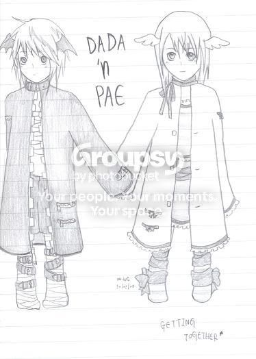
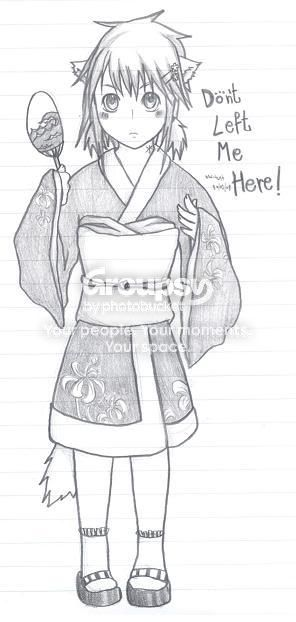
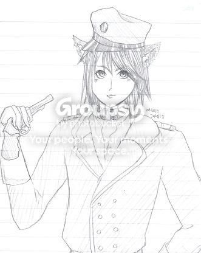

แอบมาแปะรูปหลังสอบเสร็จ...
วันที่1-18มีนาฯนี้ต้องไปเรียนGETคอร์สเตรียมฯ
เศร้า...

อันนี้มีเพื่อนรีเควสท์มา
หูหมา ผมยุ่งๆยาวๆ แล้วก็... พังค์?
ไม่เคยวาดผมยุ่งๆมาก่อนเลย นี่จึงนับได้ว่าเป็นการเปิดซิงผมยุ่ง? (ถึงจะดูไม่ยุ่งเท่าไหร่ก็เถอะนะ..)
ภาพหย่าย >>
http://i133.photobucket.com/albums/q74/ ... DJAM08.jpg

ดาด้า ก่ะ เป้
รีเควสท์โดย เพื่อนอีกแหละ
คนมันไม่เคยวาดของน่ารักๆ จู่ๆจะให้มาวาดมันก็ยากน้ะ.. TwT"

กำลังสับสนอย่างหนักว่า ต้องเอาแถบซ้ายเข้า หรือเอาแถบขวาเข้ากันแน่?
แบบไหนมันแต่งตัวศพ แบบไหนมันแต่งตัวคนหว่า...

เยอรมันเชพเพิร์ด
เรียกสั้นๆก็อัลเซเชี่ย(น)อ่ะนะ
แต่สะกดภาษาอังกฤษไม่เป็น...
(จะเรียนคอนแวนต์ไปเพื่ออะไรเนี่ย)
ภาพหย่าย >>
http://i133.photobucket.com/albums/q74/ ... heperd.jpg
http://i133.photobucket.com/albums/q74/ ... ction2.jpg
ราฟบนสมุดไร้เส้น ครึ่งแรก
โดนเพื่อนว่าเอาว่าหื่น ตอนที่กำลังวาดตัวบนสุด =w="
http://i133.photobucket.com/albums/q74/ ... Action.jpg
ราฟบนสมุดไร้เส้น ครึ่งหลัง
http://i133.photobucket.com/albums/q74/ ... /Levin.jpg
โอเอะออริเหงาๆคนเดียว แบบไม่ลงสี

โอเอะออริเหงาๆคนเดียว แบบลงสี (เลวกว่าไม่ลงสีอีกกกกกก)